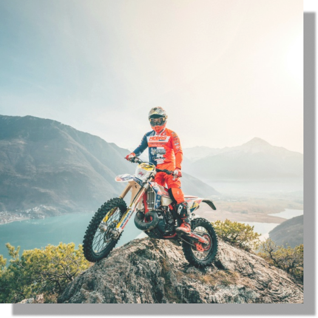

MOTOCROSS
El Motocross es una disciplina del motociclismo que consiste en realizar una serie de pruebas con la motocicleta sobre circuitos todoterreno cerrados o libres cuyo rastro se remonta hasta el Cross Country, una carrera a campo traviesa realizada a pie o a caballo que consistía en recorrer senderos y rutas alternativas en este tipo de terrenos complicados.